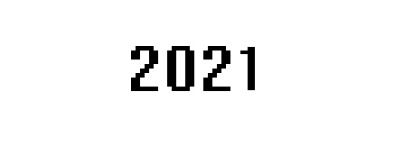

Home
Projects
About
Contact
Mixed Medium
Woodworking

Wall ornament made from recycled paper and oak wood scraps.
Tea/Coffee table made entirely from FSC certified Western Redwood.
A pipe made for a friend, inspired by a long rainy walk in the forest. Materials: Bamboo, Cherry, Padauk for the mushroom caps.